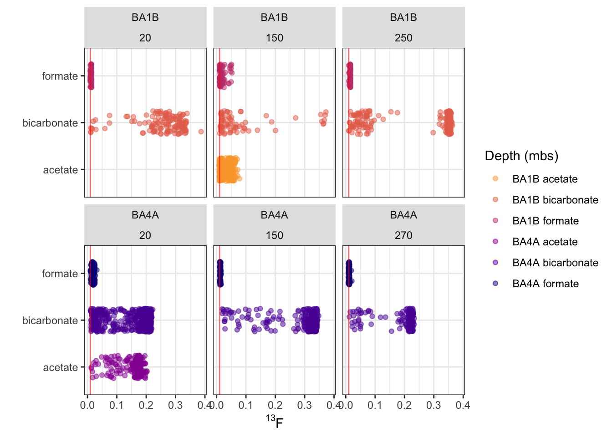
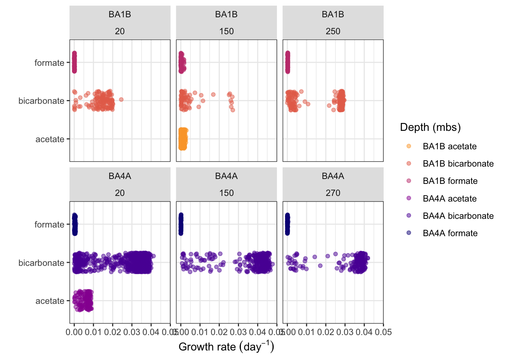
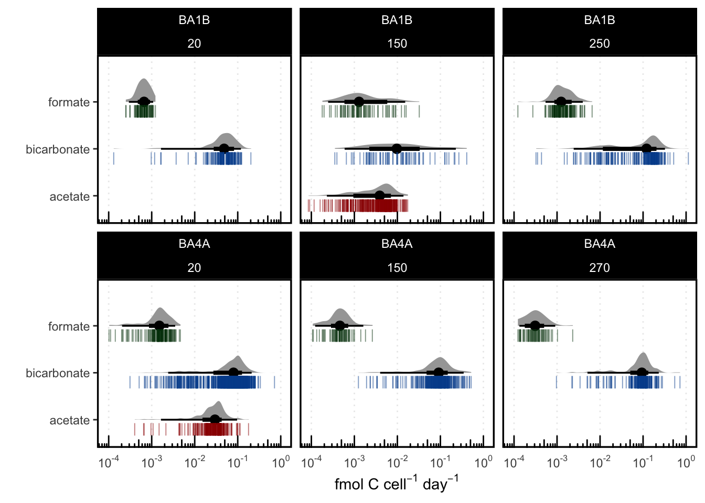
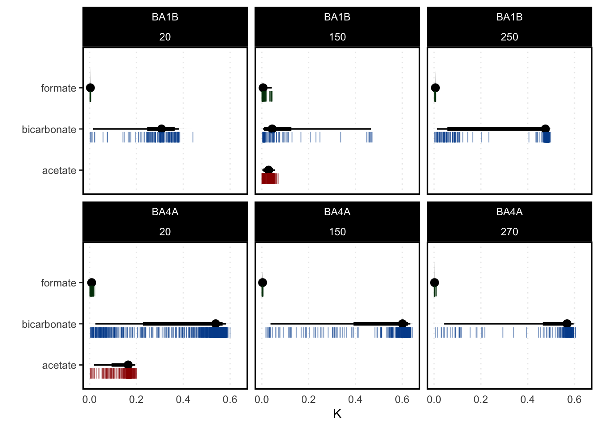
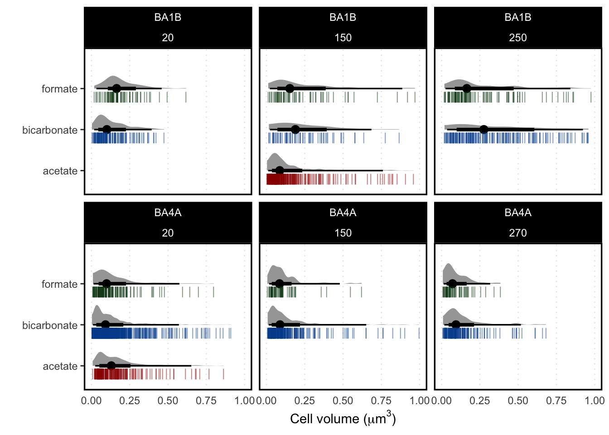
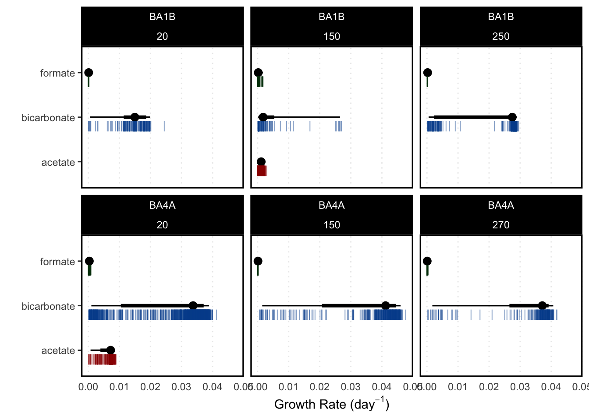

Code
rm(list=ls())Clear the environment
rm(list=ls())Load tidyverse and plotting libraries
library(tidyverse) # CRAN v1.3.2
library(ggdist) # CRAN v3.2.0
library(ggforce) # CRAN v0.4.1
library(isotopia) # [github::isoverse/isotopia] v0.5.8
library(scales) # CRAN v1.2.1
source("source/calculate_mu.R")
source("source/calculate_sigma_mu.R")data_path <- "data/nanoSIMS_tables/collected_tables/"
if (file.exists("cache/nanoSIMS_data.RDS")) {
roi_data <- readRDS("cache/roi_data.RDS")
} else {
tsv_file_list = list.files(path = data_path, pattern="*.tsv")
roi_data <- tibble()
roi_data <- roi_data[-1,] # Remove the garbage row of the tibble
i = 0
for (tsv in tsv_file_list) {
temp <- read_tsv(paste0(data_path, tsv),
col_types = cols())
temp <- temp %>% mutate(filename = tsv)
roi_data <- bind_rows(roi_data, temp)
i <- i + 1
print(paste("File", i, "of", length(tsv_file_list), "loaded."))
}
saveRDS(roi_data, "cache/roi_data.RDS")
}
rm(temp) # remove the temp# Amendment target concentration data
amendments <- readxl::read_excel("data/13C-amendment-concentrations.xlsx") |>
rename(spike.at13C = at13C,
spike.uM = concentration.um)
# DIC concentration data
DIC <- readRDS(file = "Caro DIC Run1 March 6/om23_dic_run1.RDS")amendment_palette <- c("#9c0000", "#004e9c", "#003b09")roi_data <- roi_data |>
# remove the suffix, whichi s 23 characters long
mutate(sample_id = str_sub(filename, end = -23)) |>
# add well info
mutate(
well = str_sub(sample_id, end = 4),
# parse the depth as a 3 digit number
depth = as.numeric(str_extract(sample_id, "\\d{2,3}")),
amendment = case_when(
str_detect(sample_id, "AC") ~ "acetate",
str_detect(sample_id, "FORM") ~ "formate",
str_detect(sample_id, "BIC") ~ "bicarbonate",
str_detect(sample_id, "NEG") ~ "negative control",
)
) |>
# add factional abundance
mutate(at13C = Ratio_13Cx12C/ (1 + Ratio_13Cx12C))neg_ctl_mean <- roi_data |>
filter(amendment == "negative control") |>
pull(Ratio_13Cx12C) |>
mean(na.rm = TRUE)
neg_ctl_sd <- roi_data |>
filter(amendment == "negative control") |>
pull(Ratio_13Cx12C) |>
sd(na.rm = TRUE)
custom_order = c("BA1B negative control", "BA1B formate", "BA1B bicarbonate", "BA1B acetate", "BA4A formate", "BA4A bicarbonate", "BA4A acetate")
# Plot it
p_ratio <- roi_data |>
mutate(
condition = paste(well, amendment),
condition = fct_recode(condition, !!!setNames(custom_order, custom_order))
) |>
filter(amendment != "negative control") |>
ggplot(
aes(
x = at13C,
y = amendment,
color = condition
)
) +
geom_point(
position = position_jitter(height = 0.25),
alpha = 0.5
) +
geom_vline(xintercept = neg_ctl_mean, linewidth = 0.5, color = "red", alpha = 0.5) +
annotate(geom = "rect",
xmin = neg_ctl_mean - (2*neg_ctl_sd),
xmax = neg_ctl_mean + (2*neg_ctl_sd),
ymin = -Inf, ymax = Inf,
color = NA,
fill = "red",
alpha = 0.25
) +
scale_color_viridis_d(begin = 0.8, end = 0, option = "plasma") +
facet_wrap(vars(well, depth)) +
#ggforce::facet_zoom(xlim = c(0, 0.1)) +
theme_bw() +
labs(
x = latex2exp::TeX("$^{13}F$"),
y = "",
color = "Depth (mbs)",
shape = "Depth (mbs)"
) +
theme(
strip.background = element_rect(fill = "#e3e3e3", color = NA)
)
p_ratio
Incubations were prepared in 50 mL serum vials that were acid washed and combusted prior to sampling, sealed with autoclaved butyl rubber stoppers. Carbon isotopes were added at 99.99 at. % enrichment to aim for concentrations of:
| Amendment | BA3A | BA4A | BA1B |
|---|---|---|---|
| 13C Formate | 50µM | 50µM | 50µM |
| 13C Acetate | 50µM | 50µM | 50µM |
| 13C Bicarbonate | 100µM | 1000µM | 6000µM |
Inspect the data:
amendments |> knitr::kable()| well | amendment | spike.uM | spike.at13C |
|---|---|---|---|
| BA3A | formate | 50 | 0.9999 |
| BA3A | acetate | 50 | 0.9999 |
| BA3A | bicarbonate | 100 | 0.9999 |
| BA4A | formate | 50 | 0.9999 |
| BA4A | acetate | 50 | 0.9999 |
| BA4A | bicarbonate | 1000 | 0.9999 |
| BA1B | formate | 50 | 0.9999 |
| BA1B | acetate | 50 | 0.9999 |
| BA1B | bicarbonate | 6000 | 0.9999 |
We must account for isotopic dilution of the tracer from carbon pools native to the sample.
For formate and acetate, in the absence of reliable measurements of these compounds, we will use the average of previously measured formate and acetate in Oman wells:
| Well | Formate (µM) | Acetate (µM) |
|---|---|---|
| NSHQ04 | 2.33 | 1.37 |
| NSHQ14 | 1.73 | 1.25 |
| WAB71 | 1.52 | 0.631 |
formate_estimate.um <- mean(2.33, 1.73, 1.52)
acetate_estimate.um <- mean(1.37, 1.25, 0.631)
formate_estimate.um[1] 2.33acetate_estimate.um[1] 1.37DIC_slim <- DIC |>
# select just the OM23 well data (remove standards, blanks)
filter(type == "Falcon Tube", !is.na(well)) |>
select(well, depth, DIC_uM, d13C.scale, d13C.error.S) |>
# convert d13C to at13C (fractional abundance)
mutate(
DIC.d13C = delta(`13C` = d13C.scale, major = "12C", ref = "VPDB"),
DIC.d13C.error = delta(`13C` = d13C.error.S, major = "12C", ref = "VPDB"),
DIC.R13C = to_ratio(DIC.d13C),
DIC.R13C.error = to_ratio(DIC.d13C.error ),
DIC.at13C = as.numeric(to_abundance(DIC.R13C)),
DIC.at13C.error = as.numeric(to_abundance(DIC.R13C.error))
) |>
select(-c(d13C.scale, d13C.error.S))Successfully found a registered standard to convert delta value: VPDB R 13C/12C: 0.01124
Successfully found a registered standard to convert delta value: VPDB R 13C/12C: 0.01124The calculation of isotopic abundances in pools derived from the combination of isotopically differing materials is defined as:
\[ m_{\Sigma}F_{\Sigma} = m_1F_1 + m_2F_2 + ... \]
where the m terms represent molar quantities of the element of interest and the F terms represent fractional isotopic abundances.
In cases of isotope dilution, an isotopic spike is added to a sample and the mixture is analyzed. For the mixture, we can rearrange to:
\[ (m_x + m_k)F_\Sigma = m_xF_x + m_kF_k \\ F_\Sigma = \frac{m_xF_x + m_kF_k}{m_x + m_k} \]
where k is the spike, and x is the natural abundance pool.
calculate_effective <- function(mx, mk, fx, fk) {
# mx and fx are natural abundance molarity and abundance
# mk and fk are isotope spike molarity and abundance
effective_concentration = (mx*fx + mk*fk) / (mx + mk)
return(effective_concentration)
}
calculate_effective(mx = 50, mk = 50, fx = 1, fk = 0.5) # 0.75[1] 0.75calculate_effective(mx = 1, mk = 50, fx = 0.01, fk = 0.9999) # 0.9804[1] 0.9804902calculate_effective(mx = 2000, mk = 6000, fx = 0.01, fk = 0.9999) # 0.7524[1] 0.752425So let’s apply this to our samples. We then calculate single-cell growth rate as per Caro et al. 2023, Kopf et al. 2015.
# join the tibbles
growth_data <- roi_data |>
# add the DIC data
left_join(DIC_slim, by = c("well", "depth")) |>
# add the amendment data
left_join(amendments, by = c("well", "amendment")) |>
mutate(
at13C.label = calculate_effective(
# molarity of natural abundance C source:
mx = case_when(
amendment == "bicarbonate" ~ DIC_uM,
amendment == "acetate" ~ acetate_estimate.um,
amendment == "formate" ~ formate_estimate.um
),
# 13C abundance of natural abundance C source:
fx = case_when(
amendment == "bicarbonate" ~ DIC.at13C,
amendment == "acetate" ~ 0.01,
amendment == "formate" ~ 0.01
),
# molarity of the isotope spike:
mk = spike.uM,
fk = spike.at13C
)
) |>
# calculate apparent growth rate
mutate(
mu.d = calculate_mu(
a = 0.85,
F2 = at13C,
F1 = 0.01,
FL = at13C.label,
t2 = 30,
t1 = 0
),
gen.d = log(2)/mu.d
)growth_data |>
mutate(
condition = paste(well, amendment),
condition = fct_recode(condition, !!!setNames(custom_order, custom_order))
) |>
filter(amendment != "negative control") |>
ggplot(
aes(
x = mu.d,
y = amendment,
color = condition
)
) +
geom_point(
position = position_jitter(height = 0.25),
alpha = 0.5
) +
#geom_vline(xintercept = neg_ctl_mean, linewidth = 0.5, color = "red", alpha = 0.5) +
# #annotate(geom = "rect",
# xmin = neg_ctl_mean - (2*neg_ctl_sd),
# xmax = neg_ctl_mean + (2*neg_ctl_sd),
# ymin = -Inf, ymax = Inf,
# color = NA,
# fill = "red",
# alpha = 0.25
# ) +
scale_color_viridis_d(begin = 0.8, end = 0, option = "plasma") +
facet_wrap(vars(well, depth)) +
theme_bw() +
labs(
x = latex2exp::TeX("Growth rate $(day^{-1})$"),
y = "",
color = "Depth (mbs)",
shape = "Depth (mbs)"
) +
theme(
strip.background = element_rect(fill = "#e3e3e3", color = NA)
)
# Define the mean and standard deviation of our natural abundance control
mean_at13C_natabund <- roi_data |>
filter(amendment == "negative control") |>
pull(at13C) |>
mean()
sd_at13C_natabund <- roi_data |>
filter(amendment == "negative control") |>
pull(at13C) |>
sd()The authors of (Stryhanyuk et al. 2018) define a term K as the fraction of the element incorporated by a cell during incubation with isotope-labeled growth substrates, relative to its initial cellular content. In other words, K represents the fraction of cellular Carbon that is from an isotope tracer, versus carbon not from an isotope tracer. The relative assimilation expressed with K values can be used to compare a relative difference and heterogeneity in single cell activity revealed in relative amount of assimilated material.
While (Stryhanyuk et al. 2018) define K using isotope ratio terms (R), we use fractional abundance notation where
\[ ^{13}F = \frac{^{13}C}{^{13}C + ^{12}C} \]
and
\[ ^{13}F = \frac{^{13}R}{1 + \space ^{13}R} \]
\[ K = \frac{aF_T - F_i}{aF_L - F_i} \]
where:
\(a\) is the assimilation efficiency fraction (0 - 1) of the target compound.
\(F_T\) is the isotope fractional abundance at time of sampling (time = T)
\(F_i\) is the initial isotope fractional abundance before the addition of tracer (or, a tracer-free negative control).
calculate_K <- function(a = 1, FT, Fi, FL) {
# a defaults to 1, assuming autotrophic growth
# use other values as appropriate
K = (a*FT - Fi) / (a*FL - Fi)
}To calculate cell-specific assimilation rate, we can multiply the absolute value of an element mass per cell volume (for example, carbon partial density \(\rho_C (g/\mu m^3)\) by the ROI-defined cellular volume (\(V_i\) \(\mu m^3\) ) calculated for each cell, to get the mass of carbon for each of the analyzed cells:
\[ m_i = \rho_C \times V_i \] where:
\(m_i\) is the mass of carbon in a given cell
\(\rho_C\) is the carbon partial density in a cell (\(g/ \mu m^3\) )
\(V_i\) is cellular volume ( \(\mu m^3\))
Alternatively, as we do in this study, we can convert the cell-specific volume to cell-specific mass using the relationship described in (Khachikyan et al. 2019):
\[ m_{carbon} = 197 \times V^{0.46} \]
where:
\(V\) refers to cellular volume in \(\mu m^3\)
\(m_{carbon}\) refers to cell-specific carbon mass in femtograms (fg)
# this function uses partial density of carbon
calculate_mcarbon_density <- function(rho, vol) {
# rho is the carbon partial density of a cell in g/µm^3
# v is cellular volume in µm^3
mass = rho * vol
return(mass)
}
# this function uses Khachikyan et al. 2019 empirically-derived relationship
calculate_mcarbon <- function(V) {
mass = 197 * (V^0.46)
return(mass)
}In order for these calculations to work, we must have reasonable estimates of cellular volume that are derived from the ROI-area. (Trembath-Reichert et al. 2021; Stryhanyuk et al. 2018) use the following relationship, which takes into account the volume of two capping hemispheres on a coccoidal or rod-shaped cell:
\[ V = \frac{1}{2}\pi \times W^2 \times \left( \frac{1}{3} W + \frac{1}{2}(L-W)\right) \]
where:
L is cell length (major axis) in µm
W is cell width (minor axis) in µm
If L = W, this relationship will express the volume of a sphere, and so is applicable to coccoidal cells.
calculate_volume <- function(L, W) {
# L and W are major and minor axis lengths in um
# volume is returned in um^3
volume = ((1/2) * pi) * W^2 * ((1/3*W) + ((1/2)*(L-W)))
return(volume)
}To derive the mass of carbon assimilated by each cell, the cell-specific mass of carbon is multiplied by the fraction \(K\) of carbon incorporated into the cell:
\[ \mu_i = m_i \times K \]
where \(µ_i\) is assimilated carbon (not to be confused with cell-specific growth rate, µ).
calculate_assimilated_C <- function(mass, K) {
# mass is cell-specific mass of carbon
# K is fraction carbon that is incorporated
mu = mass * K
return(mu)
}And the cell-specific assimilation rate of carbon (\(r_c\)) is calculated for each cell by dividing the assimilated carbon by time:
\[ r_C = \frac{u_i}{t} = \frac{\rho_C \times V_i \times K}{t} \]
calculate_assim_rate <- function(mu, t) {
# mu is mass of assimilated carbon (fg)
# the rate is assimilated carbon per unit time (fg/d for example)
rate = mu / t
return(rate)
}
calculate_assim_rate_density <- function(rho, vol, K, t) {
# rho is the carbon partial density of a cell in g/µm^3
# v is cellular volume in µm^3
# K is the fraction of cellular carbon that is from assimilated tracer
# t is change in time
rate = (rho * vol * K) / t
}The error in \(r_C\) is calculated by accounting for uncertainties of the associated input values as follows:
\[ \Delta r_C = \sqrt{ \left( \frac{\partial r_c}{\partial \rho} \times \Delta \rho \right)^2 + \left(\frac{\partial r_c}{\partial V_i} \times \Delta V \right)^2 + \left(\frac{\partial r_c}{\partial K} \times \Delta K \right)^2 + \left(\frac{\partial r_c}{\partial t} \times \Delta t \right)^2 } \]
and:
\[ \frac{\partial r_c}{\partial \rho} = \frac{V \times K}{t} \\ \frac{\partial r_c}{\partial V_i} = \frac{\rho \times K}{t} \\ \frac{\partial r_c}{\partial K} = \frac{\rho \times V}{t} \\ \frac{\partial r_c}{\partial t} = - \frac{\rho \times V \times K}{t^2} \]
calculate_assim_rate_error <- function(
rho, # cell specific carbon density (g/µm^3)
V, # cell specific volume (µm^3)
K, # K
t, # change in time
del.rho, # uncertainty in rho
del.V, # uncertainty in volume
del.K, # uncertainty in K
del.t # uncertainty in T
) {
# define partial derivative terms
dr.drho = (V*K) / t
dr.dV = (rho * K) / t
dr.dK = (rho * V) / t
dr.dt = - (rho * V * K) / (t^2)
del.rate = sqrt(
(dr.drho * del.rho)^2 +
(dr.dV * del.V)^2 +
(dr.dK * del.K)^2 +
(dr.dt * del.t)^2
)
return(del.rate)
}# how many microns per pixel?
# each image is 512 x 512 pixels
# each image is 25 µm x 25 µm area
um_per_px <- 25 / 512 # um/px
assim_data <- growth_data |>
# convert axis lengths to µm instead of pixels
mutate(
axis_major_length.um = axis_major_length * um_per_px,
axis_minor_length.um = axis_minor_length * um_per_px
) |>
mutate(
# add at13C natural abundance (F_i)
at13C.t0 = mean_at13C_natabund,
# calculate K, fraction of cell assimilated from tracer
K = calculate_K(a = 1, FT = at13C, Fi = at13C.t0, FL = at13C.label),
# calculate cell volume
vol = calculate_volume(L = axis_major_length.um, W = axis_minor_length.um),
# calculate cell carbon mass in fg
cell.C.fg = calculate_mcarbon(V = vol),
# calculate mass of assimilated carbon
assim.C.fg = calculate_assimilated_C(mass = cell.C.fg, K = K),
# calculate rate of assimilation per day (34 day incubation)
# fg/day
rC.fg.d = calculate_assim_rate(mu = assim.C.fg, t = 34),
# convert to fmol/cell/day by dividing fg / 12.01 fg/fmol
rC.fmol.d = rC.fg.d / 12.01
)p_carbon_assim <- assim_data |>
filter(amendment != "negative control") |> # filter negative controls out
# add "quantified" where sample is quantified if 3sigma above the mean natabund ctl
mutate(quantified = if_else(
at13C > (mean_at13C_natabund + (3*sd_at13C_natabund)),
true = TRUE,
false = FALSE
)) |>
filter(quantified) |>
ggplot() +
aes(
x = rC.fmol.d,
y = amendment,
color = amendment
) +
ggdist::stat_halfeye(color = "black", scale = 0.5) +
geom_point(
position = position_nudge(y = -0.2),
alpha = 0.5,
shape = 124,
size = 3
) +
#scale_color_viridis_d(begin = 0.8, end = 0, option = "plasma") +
scale_color_manual(values = amendment_palette) +
scale_x_log10(
breaks = trans_breaks("log10", function(x) 10^x),
labels = trans_format("log10", math_format(10^.x))
) +
annotation_logticks(sides = "b") +
facet_wrap(vars(well, depth)) +
theme_bw() +
labs(
x = latex2exp::TeX("fmol C $cell^{-1}$ $day^{-1}$"),
y = "",
color = "Depth (mbs)",
shape = "Depth (mbs)"
) +
theme(
strip.background = element_rect(fill = "#e3e3e3", color = NA),
panel.grid.minor = element_blank(),
panel.grid.major.y = element_blank(),
panel.grid.major.x = element_line(linetype = "dotted"),
strip.background.x = element_rect(fill = "black"),
strip.text = element_text(color = "white"),
panel.border = element_rect(linewidth = 1.2, color = "black"),
axis.ticks.x = element_blank(),
legend.position = "None"
)
p_carbon_assim
cowplot::save_plot(
plot = p_carbon_assim,
filename = "fig_output/carbon_assim.pdf",
base_height = 7,
base_width = 9
)assim_data |>
filter(amendment != "negative control") |> # filter negative controls out
# add "quantified" where sample is quantified if 3sigma above the mean natabund ctl
mutate(quantified = if_else(
at13C > (mean_at13C_natabund + (3*sd_at13C_natabund)),
true = TRUE,
false = FALSE
)) |>
filter(quantified) |>
ggplot() +
aes(
x = K,
y = amendment,
color = amendment
) +
ggdist::stat_halfeye(color = "black", scale = 0.5) +
geom_point(
position = position_nudge(y = -0.2),
alpha = 0.5,
shape = 124,
size = 3
) +
scale_color_manual(values = amendment_palette) +
facet_wrap(vars(well, depth)) +
theme_bw() +
labs(
x = "K",
y = "",
color = "Depth (mbs)",
shape = "Depth (mbs)"
) +
theme(
strip.background = element_rect(fill = "#e3e3e3", color = NA),
panel.grid.minor = element_blank(),
panel.grid.major.y = element_blank(),
panel.grid.major.x = element_line(linetype = "dotted"),
strip.background.x = element_rect(fill = "black"),
strip.text = element_text(color = "white"),
panel.border = element_rect(linewidth = 1.2, color = "black"),
axis.ticks.x = element_blank(),
legend.position = "None"
)
assim_data |>
filter(amendment != "negative control") |> # filter negative controls out
# add "quantified" where sample is quantified if 3sigma above the mean natabund ctl
mutate(quantified = if_else(
at13C > (mean_at13C_natabund + (3*sd_at13C_natabund)),
true = TRUE,
false = FALSE
)) |>
filter(quantified) |>
ggplot() +
aes(
x = vol,
y = amendment,
color = amendment
) +
ggdist::stat_halfeye(color = "black", scale = 0.5) +
geom_point(
position = position_nudge(y = -0.2),
alpha = 0.5,
shape = 124,
size = 3
) +
scale_color_manual(values = amendment_palette) +
scale_x_continuous(limits = c(0, 1)) +
facet_wrap(vars(well, depth)) +
theme_bw() +
labs(
x = latex2exp::TeX("Cell volume ($\\mu m ^3$)"),
y = "",
color = "Depth (mbs)",
shape = "Depth (mbs)"
) +
theme(
strip.background = element_rect(fill = "#e3e3e3", color = NA),
panel.grid.minor = element_blank(),
panel.grid.major.y = element_blank(),
panel.grid.major.x = element_line(linetype = "dotted"),
strip.background.x = element_rect(fill = "black"),
strip.text = element_text(color = "white"),
panel.border = element_rect(linewidth = 1.2, color = "black"),
axis.ticks.x = element_blank(),
legend.position = "None"
)Warning: Removed 1 rows containing missing values (`stat_slabinterval()`).Warning: Removed 17 rows containing missing values (`stat_slabinterval()`).Warning: Removed 32 rows containing missing values (`stat_slabinterval()`).Warning: Removed 14 rows containing missing values (`stat_slabinterval()`).Warning: Removed 13 rows containing missing values (`stat_slabinterval()`).Warning: Removed 4 rows containing missing values (`stat_slabinterval()`).Warning: Removed 81 rows containing missing values (`geom_point()`).
assim_data |>
filter(amendment != "negative control") |> # filter negative controls out
# add "quantified" where sample is quantified if 3sigma above the mean natabund ctl
mutate(quantified = if_else(
at13C > (mean_at13C_natabund + (3*sd_at13C_natabund)),
true = TRUE,
false = FALSE
)) |>
filter(quantified) |>
ggplot() +
aes(
x = mu.d,
y = amendment,
color = amendment
) +
ggdist::stat_pointinterval(color = "black") +
geom_point(
position = position_nudge(y = -0.2),
alpha = 0.5,
shape = 124,
size = 3
) +
scale_color_manual(values = amendment_palette) +
#scale_x_continuous(limits = c(0, 1)) +
facet_wrap(vars(well, depth)) +
theme_bw() +
labs(
x = latex2exp::TeX("Growth Rate ($day^{-1}$)"),
y = "",
color = "Depth (mbs)",
shape = "Depth (mbs)"
) +
theme(
strip.background = element_rect(fill = "#e3e3e3", color = NA),
panel.grid.minor = element_blank(),
panel.grid.major.y = element_blank(),
panel.grid.major.x = element_line(linetype = "dotted"),
strip.background.x = element_rect(fill = "black"),
strip.text = element_text(color = "white"),
panel.border = element_rect(linewidth = 1.2, color = "black"),
axis.ticks.x = element_blank(),
legend.position = "None"
)